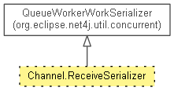

-
-
Method Summary
-
Methods inherited from class org.eclipse.net4j.util.concurrent.QueueRunner
work
-
Methods inherited from class org.eclipse.net4j.util.lifecycle.Lifecycle
activate, checkActive, checkArg, checkArg, checkInactive, checkNull, checkState, checkState, deactivate, deferredActivate, doAfterActivate, doBeforeActivate, doBeforeDeactivate, dump, getLifecycleState, isActive, isDeferredActivation, toString
-
Methods inherited from class org.eclipse.net4j.util.event.Notifier
addListener, fireEvent, fireEvent, fireEvent, fireThrowable, firstListenerAdded, getListeners, getNotificationService, hasListeners, lastListenerRemoved, removeListener
Copyright (c) 2011, 2012 Eike Stepper (Berlin, Germany) and others.